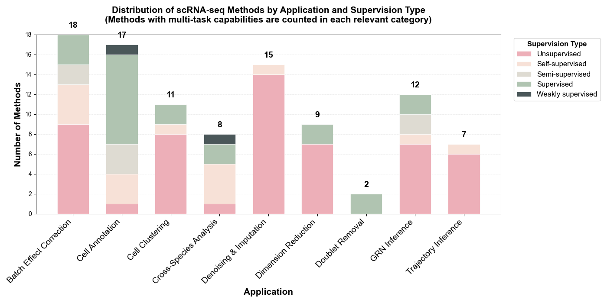
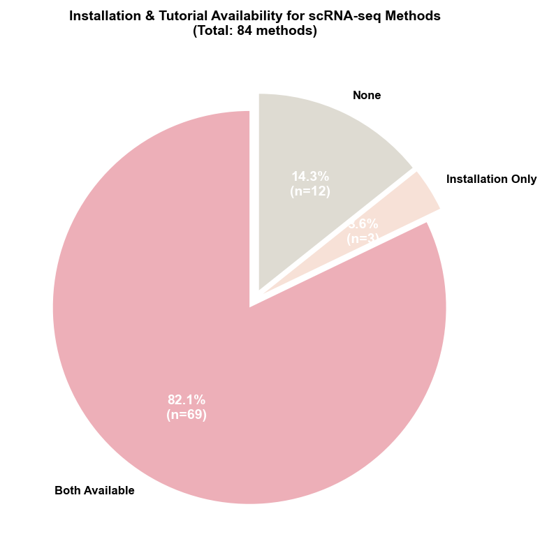

scRNA-seq Task-specific Methods
Our review encompasses 84 task-specific methods developed specifically for single-cell RNA sequencing analysis. These methods span eight key analytical workflows including denoising & imputation, dimension reduction, batch effect correction, cell clustering, cell annotation, trajectory inference, gene regulatory network (GRN) inference, and cross-species analysis. The following statistics provide an overview of the methodological landscape and reproducibility standards in the scRNA-seq field.
Distribution by Supervision Type
Learning Paradigms: Among the 84 scRNA-seq task-specific methods reviewed, unsupervised and self-supervised approaches collectively dominate with 69% (58/84 methods), reflecting the field's emphasis on discovering intrinsic cellular structures without extensive labeled references. Unsupervised methods lead at 55% (46 methods), particularly prevalent in foundational tasks like denoising & imputation (11 methods), dimension reduction (7 methods), and batch effect correction (12 methods). Self-supervised learning accounts for 14% (12 methods), while supervised (16%, 13 methods), semi-supervised (13%, 11 methods), and weakly-supervised (2%, 2 methods) approaches are primarily deployed in annotation tasks requiring reference labels.
Installation & Tutorial Availability
Reproducibility Support: Code accessibility remains strong with 97.6% (82/84) of methods providing public repositories. However, reproducibility support reveals room for improvement: 85.7% (72/84) provide installation instructions, 82.1% (69/84) include tutorials, and 82.1% (69/84) offer both documentation types. Notably, 12 methods lack both installation and tutorial documentation (scVGAE, cnnImpute, scIDPMs, Pathway-Constrained DNNs, sciLaMA, deepMNN, scMEDAL, scSemiCluster, scVQC, scGAD, TripletCell, scMultiomeGRN), representing 14.3% of the field, while an additional 3 methods (DeepBID, scMMT, scRegNet) provide only installation instructions without tutorials. This indicates ongoing challenges in standardizing reproducibility practices, though the majority of methods demonstrate strong commitment to accessibility and usability.
Table A: Reproducibility Checklist for scRNA-seq Methods
💡 How to use: Click on any method name to expand and view detailed information including Model, Features, Experimental Profile, Installation, and Tutorials. The default view shows: Method, Application, Supervision, and Code links.
| Method (Click to expand) | Application | Supervision | Code | |||||
|---|---|---|---|---|---|---|---|---|
| scGNN | Denoising and imputation | Graph Neural Network with Multi-modal Autoencoders | Unsupervised | Explicitly models cell-cell relationships in a graph to inform imputation by aggregating information from neighboring cells. | Inputs: omics data scale: >10k cells Metrics: ARI:0.67–0.92 Pearson's:0.95 | Link | Yes | Yes |
| scVGAE | Denoising and imputation | Variational Graph Autoencoder (VGAE) with ZINB Loss | Unsupervised | Integrates Graph Convolutional Networks into a ZINB-based VAE framework to preserve cell-cell similarity during imputation. | Inputs: omics data scale: 1,014–22,770 cells Metrics: ARI:0.184–0.797 | Link | ||
| DeepImpute | Denoising and imputation | Divided Deep Neural Networks | Unsupervised | Fast and scalable "divide-and-conquer" strategy that learns gene-gene relationships to predict missing values. | Inputs: omics data scale: 100–50k cells Metrics: Pearson: 0.880–0.884 | Link | Yes | Yes |
| DCA | Denoising and imputation | Autoencoder with ZINB Loss | Unsupervised | Specifically models scRNA-seq count distribution, overdispersion, and dropout rates simultaneously; highly scalable. | Inputs: omics data scale: 2,000 cells Metrics: Pearson's：0.8 Spearman：0.51 | Link | Yes | Yes |
| AutoClass | Denoising and imputation | Autoencoder with an integrated Classifier | Self-supervised | Distribution-agnostic model that can effectively clean a wide range of noise types beyond dropouts without strong statistical assumptions. | Inputs: omics data scale: 182–7,162 cells Metrics: MSE:0.5–0.6 ARI:0.37–0.86 NMI：0.39–0.82 | Link | Yes | Yes |
| scDHA | Denoising and imputation/Cell clustering | Hierarchical Autoencoder | Unsupervised | Provides a fast, precise, and complete analysis pipeline for robust feature extraction, denoising, and downstream analysis. | Inputs: omics data scale: 90–61,000 cells Metrics: R² = 0.93 ARI = 0.81 NMI：0.39–0.82 | Link | Yes | Yes |
| SERM | Denoising and imputation | Neural Network with Data Self-Consistency | Unsupervised | Recovers high-fidelity expression values by learning from partial data and enforcing self-consistency, offering high computational efficiency. | Inputs: omics data scale: 2,000–599,926 cells Metrics: Pearson >0.9 Accuracy>0.8 NMI>0.75 | Link | Yes | Yes |
| scNET | Denoising and imputation | Dual-view Graph Neural Network | Unsupervised | Integrates external biological knowledge (Protein-Protein Interaction networks) to learn context-specific gene and cell embeddings for improved imputation. | Inputs: omics data scale: 799–65,960 cells Metrics: AUPR:0.65–0.97 ARI:0.8–0.97 | Link | Yes | Yes |
| cnnImpute | Denoising and imputation | 1D Convolutional Neural Network (CNN) | Unsupervised | Uses a CNN to first predict dropout probability and then restore expression values, effectively capturing local gene patterns. | Inputs: omics data scale: 320–4,700 cells Metrics: AUPR:0.65–0.97 ARI:0.8–0.97 | |||
| scAMF | Denoising and imputation | Manifold Fitting Module | Unsupervised | Denoises data by unfolding its distribution in the ambient space, causing cells of the same type to aggregate more tightly. | Inputs: omics data scale: 103–105 cells Metrics: ARI：0.78 Accuracy：57%→ 100% | Link | Yes | Yes |
| DGAN | Denoising and imputation | Deep Generative Autoencoder Network | Unsupervised | A variational autoencoder variant that robustly imputes data dropouts while simultaneously identifying and excluding outlier cells. | Inputs: omics data scale: 1,000–5,000 cells Metrics: ARI = 0.92 FMI = 0.89 Accuracy = 0.96 | Link | Yes | Yes |
| ZILLNB | Denoising and imputation/Batch effect correction/Cell clustering | ZINB Regression with a Deep Generative Model | Unsupervised | Combines a ZINB likelihood with a deep generative model to explicitly handle zero inflation and overdispersion, producing denoised/imputed expression and a biologically meaningful latent space that supports high-quality cell clustering, while incorporating batch covariates to correct technical variation. | Inputs: omics data scale: 104 cells Metrics: ARI ≈ 0.85–0.90 Accuracy ~0.9 | Link | Yes | Yes |
| UniVI | Denoising and imputation | Mixture-of-experts β-VAE | Unsupervised | Denoises and imputes data across different modalities (e.g., scRNA-seq, scATAC-seq) via manifold alignment. | Inputs: omics data scale: 104–105cells Metrics: ARI > 0.9 R² ：0.85–0.9 | Link | Yes | Yes |
| SCDD | Denoising and imputation | Cell-similarity diffusion + GCN-Autoencoder denoising | Unsupervised | A two-stage approach that first uses cell similarity for initial imputation and then a GCN-autoencoder to denoise the result and mitigate over-smoothing. | Inputs: omics data scale: 102–106cells Metrics: ARI：0.5–0.975 R²：0.999 MSE：0.061 | Link | Yes | Yes |
| scIDPMs | Denoising and imputation | Conditional Diffusion Probabilistic Model | Unsupervised | Performs targeted imputation by first identifying likely dropout sites and then inferring values, which helps avoid altering true biological zeros. | Inputs: omics data scale: 104cells Metrics: ARI：0.98 NMI：0.98 F–score：0.99 | Link | ||
| scVI | Dimension reduction/Batch effect correction/Cross-Species Analysis/Cell clustering | VAE with ZINB loss function | Unsupervised | Learns a robust probabilistic latent space that disentangles biological variation from technical noise and batch effects, models batch identity as a covariate to yield a harmonized representation, extends to cross-species analysis by treating species as a batch effect, and enables high-quality indirect cell clustering through denoised, integrated latent embeddings. | Inputs: omics data scale: 3,000–1.3M cells Unsupervised Metrics: ASW ≈ 0.47 ARI ≈ 0.81 NMI ≈ 0.72 BE ≈ 0.6 | Link | Yes | Yes |
| scGAE | Dimension reduction | Graph Autoencoder (GAE) | Unsupervised | Explicitly preserves the topological structure of the cell-cell similarity graph, improving trajectory inference and cluster separation. | Inputs: omics data scale: 10,000 cells Metrics: NMI:0.61–0.65 | Link | Yes | Yes |
| totalVI | Dimension reduction/Batch effect correction/Cell clustering | VAE for Multi-modal Data | Unsupervised | Jointly models RNA and surface proteins to create a unified latent space for multi-omic analysis, simultaneously corrects batch effects in both modalities, and enables high-quality indirect cell clustering by providing robust, denoised, integrated embeddings. | Inputs: omics CITE–seq data scale: 32,648 cells Metrics: MAE ≈ 0.8 AUC ≈ 0.99 Latent Mixing Metric: –0.025 | Link | Yes | Yes |
| SAUCIE | Dimension reduction/Cell clustering | Deep Sparse Autoencoder | Unsupervised | Performs multiple tasks simultaneously (dimensionality reduction, clustering, imputation, batch correction) within a single, unified framework. | Inputs: omics data scale: 11 million cells Metrics: Modularity：0.8531 AUC≈0.9342 | Link | Yes | Yes |
| SIMBA | Dimension reduction | Multi-entity Graph Embedding | Unsupervised | Co-embeds cells and their defining features (e.g., genes) into a shared latent space, enabling a unified framework for diverse tasks like marker discovery and integration. | Inputs: omics data scale: million cells Metrics: ARI :0.6 –0.9 | Link | Yes | Yes |
| GLUE | Dimension reduction | Graph-linked VAEs with Adversarial Alignment | supervised | Accurately integrates unpaired multi-omics data by explicitly modeling regulatory interactions with a guidance graph, ensuring scalability and robustness. | Inputs: omics data scale: > 17,000 cells Metrics: ARI :0.716 FI Score：0.802 AMI ≈ 0.778 | Link | Yes | Yes |
| Pathway-Constrained DNNs | Dimension reduction | Deep Neural Network with Biologically-informed Architecture | Unsupervised | Enhances biological interpretability and reduces model complexity by designing network layers to correspond to known biological pathways. | Inputs: omics data scale: Millions of cells Metrics: ASW: 0.6–0.7 R² = 0.236 | Link | ||
| CellBox | Dimension reduction | ODE-based Dynamic Systems Model | Supervised | Predicts cellular responses to unseen perturbations by learning a de novo, interpretable network of molecular interactions directly from data, without relying on prior pathway knowledge. | Inputs: omics data scale: 100 proteins Metrics: Pearson's Correlation：0.93 | Link | Yes | Yes |
| sciLaMA | Dimension reduction | Paired-VAE with LLM Gene Embeddings | Unsupervised | Integrates static gene embeddings from LLMs to generate context-aware representations for both cells and genes, improving performance while maintaining computational efficiency. | Inputs: omics data scale: 14k cells Metrics: NMI:0.745 ASW :0.535 BatchASW:0.865 | Link | ||
| Vaeda | Doublet removal | Cluster-aware VAE with Positive-Unlabeled (PU) Learning | Supervised | Provides a more nuanced separation of singlets and doublets by considering cell cluster information during representation learning. | Inputs: omics data scale: 12k cells Metrics: AUPRC :0.558 F1–score:0.496 Precision :0.59 | Link | Yes | Yes |
| Solo | Doublet removal | Semi-supervised VAE | Supervised | Achieves high accuracy by learning the manifold of genuine single-cell profiles and then training a classifier to identify deviations (doublets). | Inputs: omics data scale: 44k cells Metrics: AP :0.489 AUROC :0.856 | Link | Yes | Yes |
| deepMNN | Batch effect correction | Deep Learning with MNN and Residual Networks | Self-supervised | Integrates the logic of Mutual Nearest Neighbors (MNN) into a deep learning framework for one-step, multi-batch correction. | Inputs: omics data scale: 103–105 cells Metrics: ASW F1 Score: ~0.565 ARI: ~ 0.8 | Link | ||
| STACAS | Batch effect correction | MNN-based Method | Semi-supervised | Leverages prior knowledge (cell type labels) to filter inconsistent anchors, improving the balance between batch correction and signal preservation. | Inputs: omics data scale: 103–105 cells semi–supervised Metrics: Clisi > 0.6 Cell type ASW > 0.4 | Link | Yes | Yes |
| scGen | Batch effect correction/Cross-Species Analysis | VAE with Latent Space Arithmetic | Supervised | Models and removes batch effects by performing vector arithmetic on the latent representations of cells.Predicts cellular perturbation responses across species, demonstrating that latent space can bridge species differences. | Inputs: omics data scale: 105,476 cells Metrics: R2:0.85–0.95 ASW > 0.6 | Link | Yes | Yes |
| scANVI | Batch effect correction/Cell clustering | Semi-supervised VAE | Supervised | Uses partial cell-type labels in a semi-supervised VAE to more accurately align shared populations across batches, enabling high-quality indirect clustering by first learning robust, denoised, and integrated latent representations. | Inputs: omics data scale: 10k cells Metrics: Weighted Accuracy: >0.8 | Link | Yes | Yes |
| scMEDAL | Batch effect correction | Dual-Autoencoder System | Unsupervised | Separately models batch-invariant (fixed) and batch-specific (random) effects, enhancing interpretability and enabling retrospective analysis. | Inputs: omics data scale: 104–105cells Metrics: ASW = +0.69 | |||
| ABC | Batch effect correction | Semi-supervised Adversarial Autoencoder | Semi-supervised | Guided by a cell type classifier to ensure the retention of biological signals during adversarial batch correction. | Inputs: omics data scale: 104–105cells Metrics: NMI ~ 0.91 Ilisi ~ 0.3 | Link | Yes | Yes |
| CarDEC | Batch effect removal/Cell clustering | Generative Models with Integrated Clustering | Self-supervised | Performs clustering and batch effect removal jointly by optimizing a unified objective, producing batch-invariant embeddings and clear cluster assignments within a generative/multi-task framework that delineates cell subpopulations. | Inputs: omics data scale: 103–105cells Metrics: ARI：0.78–0.98 CV ~ 0 | Link | Yes | Yes |
| DESC | Batch effect correction/Cell clustering | Deep Embedding and Clustering Models | Unsupervised | Performs batch effect correction and clustering jointly by optimizing a unified objective, co-optimizing representation learning and cluster assignment end-to-end to produce batch-invariant embeddings and more coherent cell groups. | Inputs: omics data scale: 103–106cells Metrics: ARI = 0.919–0.970 Accuracy：96.5% KL divergence:0.6 | Link | Yes | Yes |
| scArches | Batch effect correction/Cell clustering/Cross-species analysis | Transfer Learning Framework | Supervised | Transfer-learning maps queries to a fixed reference without retraining, providing batch-corrected embeddings, atlas-level clustering/label transfer, and scalable cross-species mapping. | Inputs: omics data scale: Million cells Metrics: Batch ASW：0.5–0.7 ARI:0.8–0.9 | Link | Yes | Yes |
| AIF | Batch effect correction | Adversarial Information Factorization | Unsupervised | Factorizes batch information from the biological signal using adversarial networks, without needing prior cell type knowledge. | Inputs: omics data scale: 30K cells Metrics: ASW：0.56–0.87 ARI:0.89–0.91 | Link | Yes | Yes |
| DeepBID | Batch effect correction | NB-based Autoencoder with dual-KL loss | Unsupervised | Concurrently corrects batch effects and performs clustering through an iterative process guided by a dual-KL divergence loss. | Inputs: omics data scale: 103–106cells Metrics: ARI = 0.65–0.97 NMI = 0.72–0.98 | Link | Yes | |
| ResPAN | Batch effect correction | Wasserstein GAN with Residual Networks | Unsupervised | A powerful batch correction model that combines a WGAN with mutual nearest neighbor pairing for robust integration. | Inputs: omics data scale: 103–106cells Metrics: ARI =0.92681 NMI = 0.90775 cLISI：0.97093 | Link | Yes | Yes |
| scDML | Batch effect correction | Deep Metric Learning | Self-supervised | Learns a batch-agnostic embedding space where distances between similar cells are minimized, regardless of batch origin. | Inputs: omics data scale: 103–106cells Metrics: ARI = 0.966 NMI = 0.934 | Link | Yes | Yes |
| BERMAD | Batch effect correction | Multi-layer, Dual-channel Autoencoder | Self-supervised | Designed to preserve dataset-specific heterogeneity before alignment, mitigating the risk of over-correction. | Inputs: omics data scale: 103–105cells Metrics: ARI = 0.94 ± 0.00 | Link | Yes | Yes |
| Portal | Batch effect correction | Adversarial Domain Translation Network | Unsupervised | Fast and scalable integration that avoids over-correction by adaptively distinguishing between shared and batch-unique cell types. | Inputs: omics data scale: 105–106cells Metrics: iLISI ~ 1 | Link | Yes | Yes |
| scVAE | Cell clustering | Generative Models with Integrated Clustering | Unsupervised | Possess integrated capabilities to delineate cell subpopulations as part of their generative or multi-task framework. | Inputs: omics data scale: 103–106cells Metrics: ARI = 0.656 ± 0.039 | Link | Yes | Yes |
| scDeepCluster | Cell clustering | Integrated Deep Clustering (AE + KL loss) | Unsupervised | Co-optimizes representation learning and cluster assignment in an end-to-end fashion for more coherent cell groups. | Inputs: omics data scale: 4,271 cells Metrics: ACC= 0.8100 NMI= 0.7736 ARI= 0.7841 | Link | Yes | Yes |
| Cell BLAST | Cell annotation | Generative Model / Adversarial Autoencoder | Unsupervised | Provides a BLAST-like querying system for scRNA-seq data, using a learned, batch-corrected embedding to annotate cells and identify novel types. | Inputs: omics data scale: Million cells Metrics: MBA:0.873 | Link | Yes | Yes |
| scSemiCluster | Cell annotation | Deep Clustering with Structural Regularization | Semi-supervised | Applies a semi-supervised deep clustering algorithm for annotation, regularized by data structure. | Inputs: omics data scale: 105 cells Metrics: Accuracy： >97%。 ARI：≈ 0.95 | Link | ||
| scBalance | Cell annotation | Sparse Neural Network with Adaptive Sampling | Supervised | Specialized tool that uses adaptive sampling techniques to enhance the identification of rare cell types. | Inputs: omics data scale: 105 cells Metrics: Cohen's κ：0.95 | Link | Yes | Yes |
| scTab | Cell annotation | Feature-attention Model for Tabular Data | Supervised | A scalable model trained on over 22 million cells, achieving robust cross-tissue annotation by focusing on relevant features. | Inputs: omics data scale: 15 million cells Metrics: Macro F1 = 0.7841 ± 0.0030 | Link | Yes | Yes |
| scVQC | Cell annotation | Split-vector Quantization | Supervised | The first method to apply split-vector quantization to create discrete cellular representations that enhance cell type distinction. | Inputs: omics data scale: 105 cells Metrics: Accuracy ： 0.86–0.95 ARI:0.82–0.88 | Link | ||
| scNym | Cell annotation | Semi-supervised Adversarial Neural Network | Semi-supervised | Robustly transfers annotations across experiments by learning from both labeled reference and unlabeled query data. | Inputs: omics data scale: 105 cells Metrics: Accuracy ： 90–92% | Link | Yes | Yes |
| CAMLU | Cell annotation | Hybrid Autoencoder + SVM | Semi-supervised | A hybrid framework that combines an autoencoder with a support vector machine, capable of identifying novel cell types. | Inputs: omics data scale: 2,400–3,800 cells Metrics: Accuracy ≈ 0.95 ARI ≈ 0.9 | Link | Yes | Yes |
| TripletCell | Cell annotation | Deep Metric Learning (Triplet Loss) | Supervised | Learns a discriminative embedding space, enabling accurate annotation even across different samples or protocols. | Inputs: omics data scale: 105 cells Metrics: Accuracy ≈ 80% | Link | ||
| scDeepSort | Cell annotation | Pre-trained Weighted Graph Neural Network (GNN) | Supervised | An early example of a pre-trained, weighted GNN designed for scalable and accurate cell type annotation. | Inputs: omics data scale: 265,489 cells Metrics: Accuracy：83.79% F1–score (95% CI)：0.47–0.68 | Link | Yes | Yes |
| mtANN | Cell annotation | Ensemble of Models | Supervised | Improves annotation accuracy by integrating multiple reference datasets and can identify previously unseen cell types. | Inputs: omics data scale: 105 cells Metrics: Pearson > 0.9 AUPRC ≈ 0.6 | Link | Yes | Yes |
| scGAD | Cell annotation | Anchor-based Self-supervised Framework | Semi-supervised & self-supervised | Solves the generalized annotation task by simultaneously annotating seen cell types from a reference and discovering/clustering novel cell types in the query data. | Inputs: omics data scale: 105 cells Metrics: Accuracy >90% | Link | ||
| Cellassign | Cell annotation | Probabilistic Model with Marker Genes | Weakly supervised | Assigns cell types based on a predefined matrix of marker genes, making it highly effective and interpretable in specific contexts. | Inputs: omics data scale: 1,000–20,000 cells Metrics: Accuracy = 0.944 F1–score = 0.943 | Link | Yes | Yes |
| Celler | Cell annotation | Genomic Language Model | Supervised | Specifically designed with mechanisms to address the long-tail distribution problem for improved annotation of rare cells. | Inputs: omics data scale: 107 cells Metrics: F1 = 0.956 Precision = 0.841 ± 0.002 | Link | Yes | Yes |
| scMMT | Cell annotation | Multi-use CNN Framework | Supervised | A flexible multi-task framework that performs cell annotation alongside other tasks like protein prediction. | Inputs: omics data scale: 105cells Metrics: Accuracy ≈ 0.85 ARI = 0.945 | Link | Yes | Yes |
| TOSICA | Cell annotation | Transformer | Supervised | Performs interpretable annotation guided by biological entities such as pathways and regulons. | Inputs: omics data scale: 647366 cells Metrics: Accuracy =0.8669 | Link | Yes | Yes |
| RegFormer | Cell annotation | Mamba-based Architecture with GRN Hierarchies | Self-supervised | A FM that integrates gene regulatory network hierarchies to enhance interpretability and performance. | Inputs: omics data scale: 106 cells Metrics: Accuracy = 0.86 Macro–F1 = 0.77 | Link | Yes | Yes |
| GPTCelltype | Cell annotation | Large Language Model (GPT-4) | Self-supervised | Demonstrates that large models can accurately infer cell types simply by interpreting lists of marker genes, automating the process. | Inputs: omics data scale: 105 cells Metrics: accuracy ：0.75–0.93 | Link | Yes | Yes |
| DeepVelo | Trajectory Inference and Pseudotime Analysis | Deep Learning Framework | Self-supervised | Extends RNA velocity analysis to complex, multi-lineage systems where traditional methods often fail. | Inputs: omics data scale: 104 cells Metrics: Consistency Score :0.9 | Link | Yes | Yes |
| VeloVI | Trajectory Inference and Pseudotime Analysis | Deep Generative Model (VAE) | Unsupervised | Provides crucial transcriptome-wide uncertainty quantification for the inferred cellular dynamics, enhancing reliability. | Inputs: omics data scale: 103–104 cells Metrics: accuracy: 66–68% | Link | Yes | Yes |
| scTour | Trajectory Inference and Pseudotime Analysis | VAE with Neural ODE | Unsupervised | Learns the vector field of cellular transitions and provides interpretability mechanisms to reveal driver genes. | Inputs: omics data scale: 103–105 cells Metrics: Spearman ρ > 0.9 | Link | Yes | Yes |
| VITAE | Trajectory Inference and Pseudotime Analysis | VAE with a Latent Hierarchical Mixture Model | Unsupervised | Enables joint trajectory inference from multiple datasets and provides robust uncertainty quantification. | Inputs: omics data scale: 103–106 cells Metrics: ARI :0.5~0.9 PDT:0.4~0.9 | Link | Yes | Yes |
| TrajectoryNet | Trajectory Inference and Pseudotime Analysis | Dynamic Optimal Transport Network | Unsupervised | Employs a dynamic optimal transport network to learn the continuous flow of cells over time. | inputs: omics data scale: 103–105 cells Metrics: Base TrajectoryNet：≈ 0.897 Arch MSE = 0.300 Cycle MSE = 0.190 | Link | Yes | Yes |
| TIGON | Trajectory Inference and Pseudotime Analysis | Optimal Transport with Growth/Death Models | Unsupervised | Reconstructs both population dynamics and state transition trajectories simultaneously by incorporating cell growth and death. | Inputs: omics data scale: 5,000+ cells Metrics: Pearson = 0.62 AUROC ≈ 0.9 | Link | Yes | Yes |
| GeneTrajectory | Trajectory Inference and Pseudotime Analysis | Optimal Transport on a Cell-Cell Graph | Unsupervised | A novel gene-centric paradigm that infers trajectories of genes, allowing it to deconvolve concurrent biological programs. | Inputs: omics data scale: 1,000–10,500 cells Metrics: Robustness ≈ 1 Spearman ≈ 0.9 | Link | Yes | Yes |
| DeepSEM | GRN inference | Deep Generative Model for SEMs | Unsupervised | A pioneering work that generalized linear structural equation models (SEMs) for GRN inference using a deep generative model. | Inputs: omics data scale: 1,000–10,500 cells Metrics: ARI ≈ 0.82 NMI ≈ 0.86 | Link | Yes | Yes |
| CellOracle | GRN inference | GRN Inference with In Silico Perturbation | Unsupervised | Integrates scRNA/ATAC-seq and performs in silico perturbation simulations to predict the functional consequences of TF activity. | Inputs: omics data scale: 103–105 cells Metrics: AUROC = 0.66–0.85 | Link | Yes | Yes |
| LINGER | GRN inference | GRN Inference with Regularization | Unsupervised | Enhances inference by incorporating atlas-scale external bulk genomics data and TF motif knowledge as regularization. | Inputs: omics data scale: 103–104 cells Metrics: AUC = 0.76 AUPR = 2.60 | Link | Yes | Yes |
| scMultiomeGRN | GRN inference | Cross-modal Attention Model | Semi-supervised | Specifically designed for multi-omics integration using modality-specific aggregators and cross-modal attention. | Inputs: omics data scale: 103–105 cells Metrics: Accuracy: >0.83 AUROC ≈ 0.924 AUPR ≈ 0.79 | Link | ||
| scMTNI | GRN inference | Multi-task Learning | Unsupervised | Infers cell-type-specific GRNs along developmental lineages from multi-omic data. | Inputs: omics data scale: 103 cells Metrics: Accuracy: >0.83 F–score >0.3 AUPR : 0.21~0.27 | Link | Yes | Yes |
| GRN-VAE | GRN inference | VAE-based GRN Model | Unsupervised | Improves upon the stability and efficiency of earlier generative models like DeepSEM for GRN inference. | Inputs: omics data scale: 105 cells Metrics: AUPRC > 1 | Link | Yes | Yes |
| GRANGER | GRN inference | Recurrent VAE | Unsupervised | Infers causal relationships from time-series scRNA-seq data to capture the dynamic nature of GRNs. | Inputs: omics data scale: 103 cells Metrics: AUROC ≈ 0.85–0.90 AUPRC ≈ 0.90–0.98 | Link | Yes | Yes |
| scGeneRAI | GRN inference | Explainable AI (XAI) Model | Unsupervised/self-supervised | Employs XAI techniques to infer interpretable, cell-specific regulatory networks, addressing the "black box" problem. | Inputs: omics data scale: 15,000 cells Metrics: AUC = 0.75–0.88 | Link | Yes | Yes |
| scGREAT / InfoSEM | GRN inference | LLM-integrated Models | Supervised | Incorporate textual gene embeddings from large language models as an informative prior to improve GRN inference. | Inputs: omics data scale: thousands of cells Metrics: AUROC = 0.913 AUPRC = 0.5597 | Link | Yes | Yes |
| scRegNet | GRN inference | FM+ GNN | Supervised | Combines the power of single-cell FMs with GNNs to predict regulatory connections. | Inputs: omics data scale: 800–1,000 cells Metrics: AUROC :0.93 AUPRC: 0.86 | Link | Yes | |
| DigNet / RegDiffusion | GRN inference | Diffusion Models | Unsupervised | Conceptualize network inference as a reversible denoising process, representing a new wave of generative frameworks for GRN inference. | Inputs: omics data scale: thousands of cells Metrics: AUPRC：up 19–32% | Link | Yes | Yes |
| GRNFormer | GRN inference | Graph Transformer | Semi-supervised | Uses a sophisticated graph transformer pipeline to infer regulatory relationships with high accuracy. | Inputs: omics data scale: 500–5,900 genes Metrics: AUROC/AUPRC：0.90–0.98 | Link | Yes | Yes |
| GeneCompass | Cross-Species Analysis | Knowledge-informed Transformer (FM) | Self-supervised | A large-scale model pre-trained on human and mouse cells to decipher universal gene regulatory mechanisms for cross-species tasks. | Inputs: omics data scale: 126M cells Metrics: AUC≈.0.95 Annotations accuracy：0.84–0.87 | Link | Yes | Yes |
| CACIMAR | Cross-Species Analysis | Weighted Sum Model | Self-supervised / unsupervised | Systematically quantifies the conservation score of cell types, markers, and interactions based on homologous features. | Inputs: omics data scale: 80,777 cells Metrics: R2 > 0.66 | Link | Yes | Yes |
| Nvwa | Cross-Species Analysis | Deep Learning on DNA Sequences | Self-supervised / unsupervised | Predicts cell-specific gene expression from DNA sequences, allowing it to identify conserved regulatory programs across species. | Inputs: omics data scale: 635k cells Metrics: AUROC = 0.78 AUPR = 0.59 | Link | Yes | Yes |
| CAME | Cross-Species Analysis | Heterogeneous Graph Neural Network (GNN) | Self-supervised / unsupervised | Directly assigns cell types across species from scRNA-seq data and provides quantitative assignment probabilities. | Inputs: omics data scale: Million cells Metrics: Accuracy ≈ 0.87 | Link | Yes | Yes |
| SATURN | Cross-Species Analysis | Protein Language Model (PLM) Integration | Weakly supervised | Enables cell alignment based on functional protein similarity, which is often more conserved across species than gene sequences. | Inputs: omics data scale: 335,000 cells Metrics: accuracy ≈ 0.8 ARI / NMI > 0.8 | Link | Yes | Yes |
📊 Analysis Summary
- Total Methods Reviewed: 84
- Primary Applications (by frequency):
- Cell Annotation (21 methods, 25%)
- Denoising & Imputation (16 methods, 19%)
- Batch Effect Correction (16 methods, 19%)
- GRN Inference (11 methods, 13%)
- Dimension Reduction (9 methods, 11%)
- Trajectory Inference (7 methods, 8%)
- Cross-Species Analysis (6 methods, 7%)
- Cell Clustering (6 methods, 7%)
- Doublet Removal (2 methods, 2%)
- Supervision Distribution: Unsupervised (46 methods, ~55%), Self-supervised (12 methods, ~14%), Semi-supervised (11 methods, ~13%), Supervised (13 methods, ~16%), Weakly-supervised (2 methods, ~2%)
- Unsupervised + Self-supervised: 58/84 (69%)
- Code Availability: 82/84 (97.6%) link to public repositories
- Installation Docs: 72/84 (85.7%)
- Tutorials: 69/84 (82.1%)
- Both Install + Tutorial: 69/84 (82.1%)
- Multi-task Methods: 8 methods (10%) address multiple applications simultaneously (e.g., scVI, totalVI, SAUCIE, scDHA, ZILLNB, CarDEC, DESC, scArches)
- Notable Trends:
- Foundation model integration emerging in annotation (scTab: 22M cells, Celler: 10M cells) and GRN inference (scGREAT, scRegNet)
- VAE-based architectures dominate across tasks (26 methods, 31%)
- GNN-based approaches increasingly popular for preserving cell-cell relationships (12 methods, 14%)
- Growing adoption of diffusion models (scIDPMs, DigNet, RegDiffusion) and transformers (TOSICA, GRNFormer) in recent methods